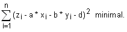
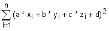

Lineare multiple Regression und Korrelation
Geben Sie die Koordinaten ( xi / yi / zi) von maximal 30 Punkten in die Felder ein.
Das Formular berechnet dann nach Klick auf 'Berechne' die Koeffizienten a, b und d in der Gleichung der
Regressionsebene E: z = a*x + b*y + d auf zwei Arten:
1. Die Summe der Quadrate der z-Differenzen wird minimal, d.h.

( 3 ≤ n ≤ 30)2. Die Summe der Quadrate der Abstände der Punkte wird minimal, d.h.

minimal unter der Bedingung a2 + b2 + c2 = 1 ( 5 ≤ n ≤ 30)
- 01 02
- 03 04
- 05 06
- 07 08
- 09 10
- 11 12
- 13 14
- 15 16
- 17 18
- 19 20
- 21 22
- 23 24
- 25 26
- 27 28
- 29 30
Resultate für n =
Mittelwerte: x = , y = , z =
1. Summe der Quadrate der z-Differenzen minimal
Summe der Quadrate der z-Differenzen =
Bestimmtheitsmass R2 =
Je näher R2 bei 1, desto besser die Korrelation.
(Summe der Quadrate der Abstände der Punkte = )
2. Summe der Quadrate der Abstände der Punkte minimal
Summe der Quadrate der Abstände der Punkte =
(Summe der Quadrate der z-Differenzen = )
©1997 - 2026 www.mathematik.ch |🔍